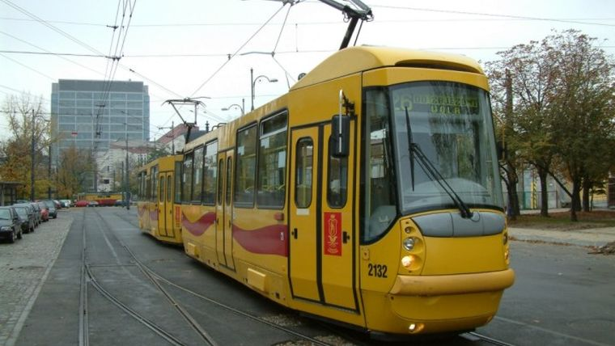

Księgowe odpisy i droższa energia dobijają PKP Cargo. Strata rośnie (137,1 mln zł)
Grupa PKP Cargo zamknęła pierwsze trzy kwartały 2026 r. stratą netto w wysokości 137,1 mln zł wobec 10,4 mln zł na minusie rok wcześniej – wynika z piątkowego komunikatu spółki.

Ustalenia wspólne (5 redakcji)
W samym III kwartale strata wyniosła 254,9 mln zł, podczas gdy przed rokiem przewoźnik wypracował 7,5 mln zł zysku. Parkiet ↗ Puls Biznesu ↗ WNP.pl ↗ Niezależna.pl ↗ Biznes Interia ↗
Firma przekazała, że na tegoroczne wyniki wpłynęło m.in. utworzenie odpisów z tytułu utraty wartości aktywów. To zdarzenie o charakterze księgowym, które obciążyło EBIT oraz wynik netto – mówi. Parkiet ↗ Niezależna.pl ↗ Biznes Interia ↗
— Jednocześnie musimy mierzyć się z rosnącymi kosztami prowadzenia działalności, w szczególności energii i paliwa trakcyjnego oraz dostępu do infrastruktury. Parkiet ↗ Niezależna.pl ↗ Biznes Interia ↗
Dlatego konsekwentnie koncentrujemy się na działaniach restrukturyzacyjnych, poprawie efektywności i budowaniu podstaw do trwałej poprawy wyników spółki – dodaje. Parkiet ↗ Niezależna.pl ↗ Biznes Interia ↗
Dodatkowe szczegóły i kontekst ze źródeł
W trzecim kwartale grupa straciła na czysto 254,9 mln zł, podczas gdy rok wcześniej miała 7,5 mln zł zysku. Nie ukrywa jednak, że spółka ma też inne problemy. Spółka podała, jak wyglądałyby wyniki bez wpływu odpisów. Niezależna.pl ↗
W efekcie na początku października ówczesny prezes Zbigniew Prus oraz Paweł Miłek i Michał Łotoszyński zrezygnowali z pełnienia swoich funkcji. Obecnie obowiązki prezesa wykonuje Monika Starecka. Postępowanie restrukturyzacyjne PKP Cargo zostało otwarte w lipcu 2024 roku. Biznes Interia ↗
Księgowe odpisy i droższa energia dobijają PKP Cargo. Strata rośnie
Ponad 137 mln zł straty PKP Cargo po trzech kwartałach roku. To efekt m.in. odpisów
PKP Cargo z dużą stratą. To miało istotny wpływ na wyniki finansowe kolejowej spółki
Katastrofalny wynik PKP Cargo. Potężne straty kolejowej spółki wykazane w raporcie
PKP Cargo notuje trzynastokrotnie wyższą stratę niż w ubiegłym roku